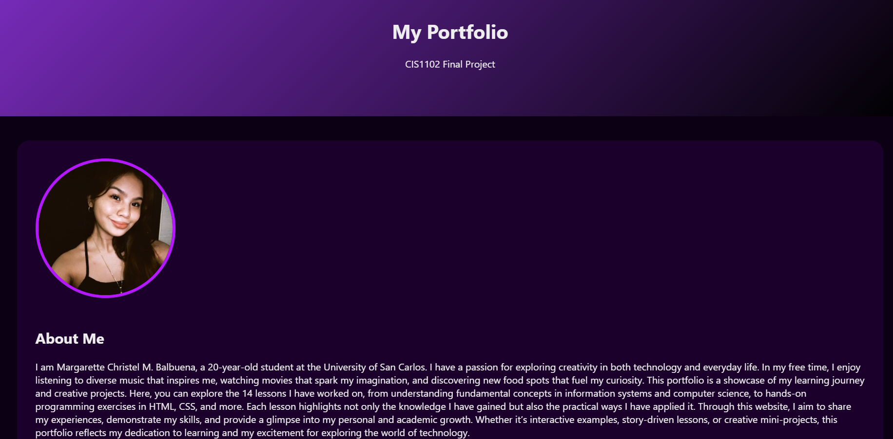
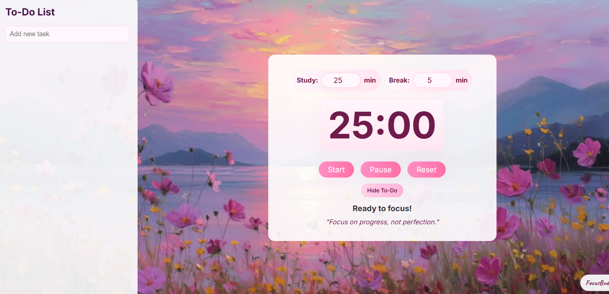

University of San Carlos
Bachelor of Science in Information Technology (Expected 2028)
Relevant coursework includes Web Development, Data Analysis, and Networking Fundamentals, Programming (C).
Hi, I’m Margarette Christel M. Balbuena, an Information Technology student at the University of San Carlos with a passion for creating meaningful digital experiences. I’m focused on honing my web development skills—HTML, CSS, and beyond—while applying creativity and attention to detail to every project I work on.
I’m a BS Information Technology student at the University of San Carlos with a passion for building meaningful digital solutions. My current focus is web development and data analysis, and I enjoy turning ideas into practical projects that solve problems or improve experiences. While I’m still early in my career, I’ve worked on academic and personal projects that help me develop my coding, analytical, and problem-solving skills. I’m curious, motivated, and eager to learn new technologies, constantly experimenting to grow my abilities. My goal is to apply what I learn to real-world projects and continue building a portfolio that demonstrates both creativity and technical skills.
Bachelor of Science in Information Technology (Expected 2028)
Relevant coursework includes Web Development, Data Analysis, and Networking Fundamentals, Programming (C).

This project showcases my web development skills, including HTML, CSS, and responsive design. I built this portfolio to organize and present my work, experiment with layout and styling, and practice creating clean, accessible web pages. It demonstrates my ability to plan, structure, and implement web projects independently.

This project showcases my web development skills, including HTML, CSS, and responsive design. I built this portfolio to organize and present my work, experiment with layout and styling, and practice creating clean, accessible web pages. It demonstrates my ability to plan, structure, and implement web projects independently.
balbuenamargarette2@gmail.com